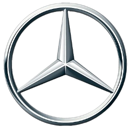
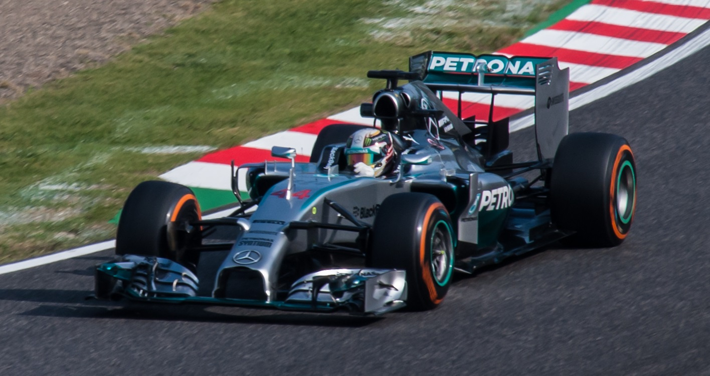
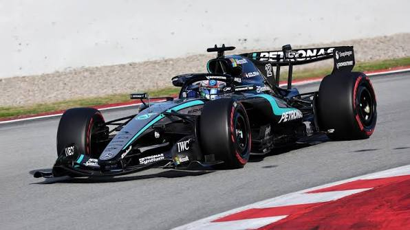

Mercedes-AMG Petronas
As Flechas de Prata: tradição histórica e o maior domínio da era híbrida.
A Mercedes iniciou sua trajetória vitoriosa na F1 na década de 1950 e retornou como equipe de fábrica em 2010. Entre 2014 e 2021, estabeleceu o recorde inédito de 8 Títulos de Construtores consecutivos na categoria.

Pilotos Marcantes
- Juan Manuel Fangio (Bicampeão em 1954 e 1955)
- Lewis Hamilton (Seis títulos na equipe: 2014, 2015, 2017-2020)
- Nico Rosberg (Campeão em 2016)
- George Russell (Líder atual)
Legado Híbrido
A equipe redefiniu a engenharia moderna com a eficiência de suas unidades de potência V6 Turbo Híbridas, estabelecendo um padrão de excelência técnica incomparável.
Situação em 2026
Em 2026, a Mercedes inicia uma nova fase com a jovem promessa Kimi Antonelli ao lado de George Russell, apostando forte na nova regulamentação de motores. Antonelli se tornou o campeão mais jovem da F1, enquanto a Mercedes, foi campeã do título de Construtores.
Galeria de Carros Históricos

Mercedes F1 W05 Hybrid (2014)
O monoposto que deu início ao histórico domínio de 8 títulos mundiais de construtores.

Mercedes W17 / 2026
Carro desenvolvido para o novo regulamento híbrido e sustentável de 2026.